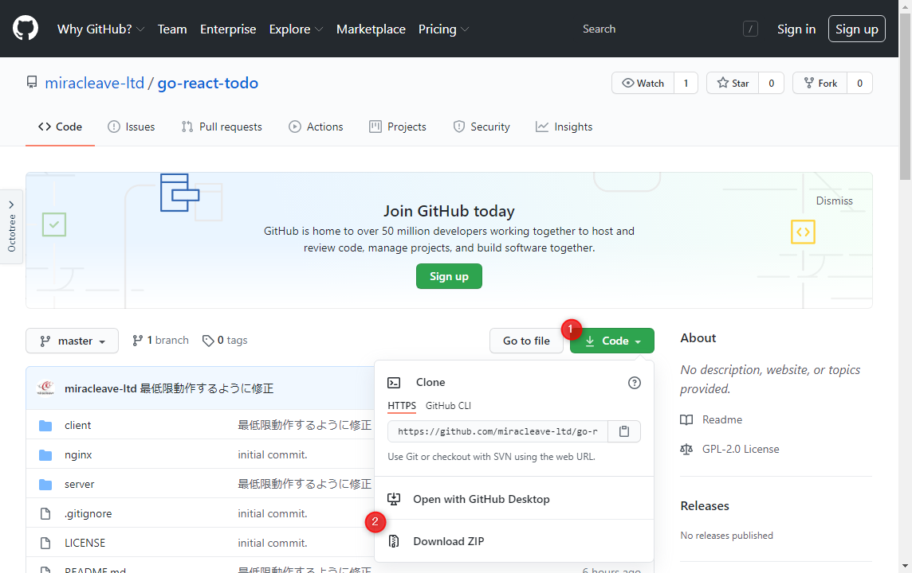
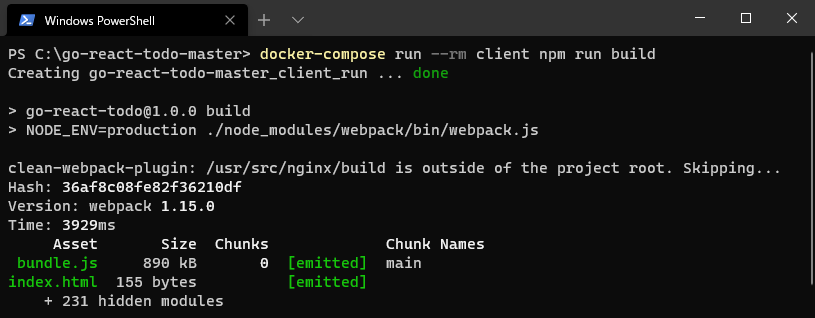
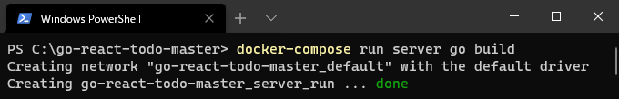
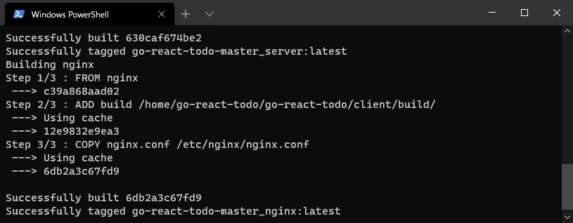
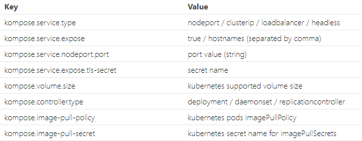
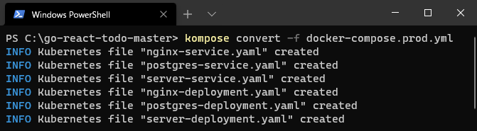
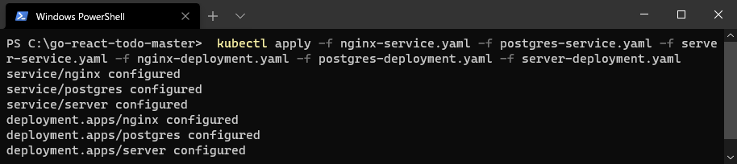
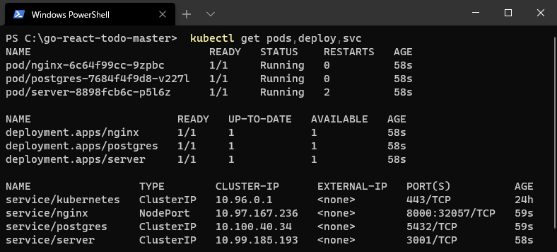
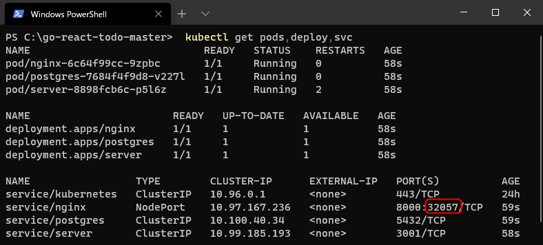
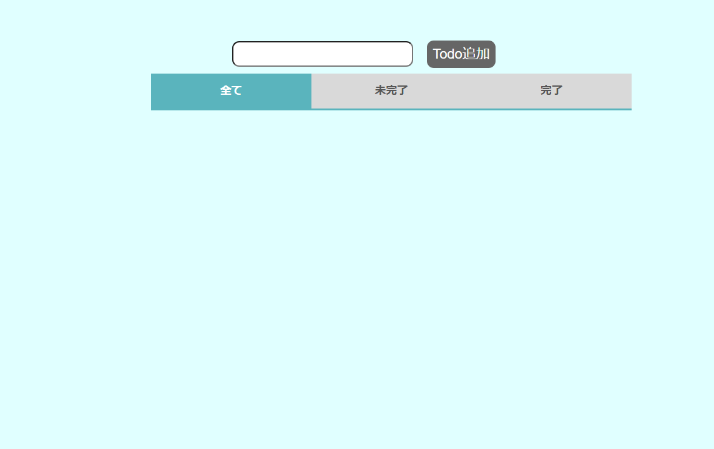

Section2
1. Komposeを利用して、Kubernetes用yamlを作成しよう
React+Go(Gin)+PostgresSQLのTodoアプリを使用していきます。
今回利用するアプリをGitHubよりプログラムをダウンロードします。
ローカル環境にDockerイメージを作成します。
※ダウンロードしたファイルを解凍したフォルダで実行してください。フロントアプリのビルドを行います。
次のコマンドを実行してください。docker-compose run client npm run build
バックエンドのビルドを行います。
次のコマンドを実行してください。docker-compose run server go build
アプリイメージのビルドを行います。
次のコマンドを実行してください。docker-compose -f docker-compose.prod.yml build
Komposeでは、docker-compose.ymlファイルにKompose用Labelsを記載することで、Kompose用の設定を行うことができます。
 参考URL：https://kompose.io/user-guide/今回は以下の３点を修正します。
- ローカルでKubernetesを実行するため、
kompose.service.typeを設定します。 - ローカルコンテナイメージを利用するため、
kompose.image-pull-policyを設定します。 Komposeで
depends_onが対応していないため、portを追加で設定します。対象ファイル：(go-react-todo-master)/docker-compose.prod.yml
※port,labelsを追加しています。version: '3' services: postgres: image: postgres environment: - POSTGRES_PASSWORD=postgres ports: - "5432:5432" server: build: ./server command: ./app ports: - "3001" depends_on: - "postgres" environment: - POSTGRES_PASSWORD=postgres labels: kompose.image-pull-policy: Never nginx: build: ./nginx ports: - "8000:80" labels: kompose.service.type: nodeport kompose.image-pull-policy: Never
- ローカルでKubernetesを実行するため、
Komposeコマンドでdocker-compose.ymlを変換します。
今回は開発時の者は不要ですので、production環境用のymlファイルをもとに変換します。
※ダウンロードしたファイルを解凍したフォルダで実行してください。kompose convert -f docker-compose.prod.yml(WindowsPowerShell) 
変換後の確認を行います。
次のファイルが生成されていることを確認してください。- nginx-service.yaml
- postgres-service.yaml
- server-service.yaml
- nginx-deployment.yaml
- postgres-deployment.yaml
- server-deployment.yaml
Kubernetes用のyamlファイルは生成できたのですが、Komposeの変換だけでは対応しきれない部分の修正を行います。
ローカルイメージを取得するため、ローカルイメージ名を記載します。対象ファイル：(go-react-todo)/server-deployment.yaml
Windowsの場合
- [36] image: server + [36] image: go-react-todo-master_serverMacの場合
- [34] image: server + [34] image: go-react-todo-master_server対象ファイル：(go-react-todo)/nginx-deployment.yaml
Windowsの場合
- [33] - image: nginx + [33] - image: go-react-todo-master_nginxMacの場合
- [31] - image: nginx + [31] - image: go-react-todo-master_nginxKubernetesに変換したファイルをKubernetesに反映します。
kubectl apply -f nginx-service.yaml -f postgres-service.yaml -f server-service.yaml -f nginx-deployment.yaml -f postgres-deployment.yaml -f server-deployment.yaml(WindowsPowerShell) 
Kubernetesの状態確認を行います。
kubectl get pod,deploy,svc※kubectlでは略語を使用できます。
名称: 略称
- pods: pod
- deployments: deploy
services: svc
(WindowsPowerShell) 
Kubernetesに反映したプロジェクトを確認します。
Kubernetesの状態確認を行った際にNginxの公開されているポートを確認します。
NodePortは動的にポート番号を割り振るため、個々の端末によって異なります。
上記で確認したポート番号のLocalhostにアクセスしてください。
http://localhost:XXXXXTodoアプリが表示しましたらデプロイ完了です。 